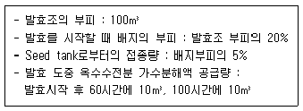
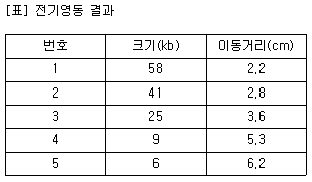
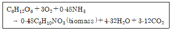
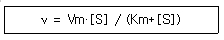
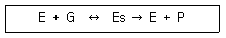

바이오화학제품제조기사 (2015-05-31 기출문제)
1과목: 미생물공학
1. 식초용 초산(acetic acid) 발효의 상업적인 생산에 주로 이용되고 있는 방법은?
- 적하식 발효법 (trickling generator)
- 미생물 고정화법 (whole cell immobilization)
- 표면발효법 (surface culture)
- 혐기발효법 (anaerobic culture)
(정답률: 74%)

2. 2차 대사산물에 대한 설명으로 옳은 것은?
- 균이 생육에 필요한 양만을 생산한다.
- 공업적인 발효로 생산이 되고 있지 않는 것들이다.
- 균의 대사와 생육과 직접적인 관련이 없는 것들이다.
- 아미노산, 핵산, 단백질, 지질, 탄수화물 등이다.
(정답률: 80%)
3. Aspergillus oryzae 로부터 a-amylase를 생산하는 배지를 고안하기 위하여 여러 가지 질소원에 대해 생산성을 시험한 결과 무기 질소원보다는 유기 질소원이 양호한 것으로 나타났다. 적당한 질소원이 아닌 것은?
- 카제인 분해물 (casein hydrolysate)
- 주석산암모늄 (ammonium tartarate)
- 펩톤 (peptone)
- 옥수수시럽 (corn syrup)
(정답률: 84%)
4. 산소의 공급을 제한하여 대사를 억제하는 방법이며, 곰팡이나 효모에 적합한 균주의 보존법은?
- 유동파리핀 중층법
- 현탁법
- 동결건조법
- 계대배양법
(정답률: 88%)
5. 항생제 A는 50S 리보솜에 결합한다. 다음 중 항생제 A의 효과는?
- 진핵생물의 전사과정을 저해한다.
- 진핵생물의 번역과정을 저해한다.
- 원핵생물의 전사과정을 저해한다.
- 원핵생물의 번역과정을 저해한다.
(정답률: 72%)
6. Tetracycline 발효를 fed-batch 방식으로 행하려한다. 미강유(rice bran oil)는 발효 시작 후 30시간부터 발효 종료시까지 평균유속 0.3m3/h의 속도로, 암모니아수는 발효 시작 후 20시간부터 발효 종료시까지 평균유속 0.15m3/h의 속도로 feed한다. 배양액의 증발이 없다고 산주하고, 배양액이 발효조 부피의 80%가 될 때까지 발효 할 수 있다면 배양시간은 얼마인가?

- 약 125 시간
- 약 115 시간
- 약 1⑤ 시간
- 약 95 시간
(정답률: 59%)
7. 우유처리 공정의 부산물인 Whey에는 어떤 당이 가장 많이 포함되어 있는가?
- 과당(fructose)
- 젖당(lactose)
- 포도당(glucose)
- 전분(starch)
(정답률: 96%)
8. 젖산발효에 관여하지 않는 균주는?
- Pseudomonas 속
- Streptococcus 속
- Lactobacillus 속
- Leuconostoc 속
(정답률: 79%)
9. 호산성 세균이 아닌 것은?
- Streptococcus faecalis
- Lactobacillus bulgaricus
- Acetobacter aceti
- Bacillus subtilis
(정답률: 65%)
10. 미생물 세포가 유리(free) DNA를 받아들이는 유전자 전달 과정은?
- 접합(conjugation)
- 형질도입(transduction)
- 트랜스포손(transposon)
- 형질전환(transformation)
(정답률: 45%)
11. 전분 분해와 관련이 없는 효소는?
- 알파 아밀라아제(alpha-amylase)
- 글루코아밀라아제(glucoamylase)
- 인베르타아제(invertase)
- 베타 아밀라아제(beta-amylase)
(정답률: 89%)
12. 승화에 의한 수분 제거 방법으로 항생제, 효소액과 박테리아 현탁액에 사용되는 건조 방법은?
- 증류수 보존법
- 동결건조법
- 액체질수 보존법
- 실리카겔 보존법
(정답률: 95%)
13. 대수기 상태인 세균의 농도가 1×107 cell/mL 이었다면 2시간 후의 세균 농도는 얼마인가? (단, 이 균의 대수기에서의 세대시간은 30분이다.)
- 4×107 cell/mL
- 8×107 cell/mL
- 16×107 cell/mL
- 32×107 cell/mL
(정답률: 85%)
14. 구연산 발효에 대한 설명 중 옳지 않은 것은?
- 구연산은 혼합생장관련 산물 생성 형태로 세포 성장이 멈춘 후 질소와 인산염이 제한된 조건에서 생산이 이루어진다.
- 구연산은 2차 대사산물이기 때문에 매우 특수한 조건에서 높은 농도로 생산된다.
- Aspergillus niger 미생물은 당밀 또는 당용액에서 구연산을 생산하기 위한 미생물로 가장 널리 사용된다.
- 발효과정 중 용존산소는 고종도로 유지해야한다. 만일 산소 공급이 잠시 중단되면 구연산 생산성은 비가역적으로 급격히 감소될 수 있다.
(정답률: 74%)
15. Alcohol 발효를 위한 비당화 발효에 사용될 수 있는 기질은?
- 전분(starch)
- 폐당밀
- cellulose
- 밀기울
(정답률: 79%)
16. 균류와 산물의 연결이 틀린 것은?
- Aspergillus niger - 구연산
- Penicillium chrysogenum - 페니실린
- Aspergillus oryzae - 알파아밀라아제
- Rhizopus delemar - 베타아밀라아제
(정답률: 70%)
17. 산업적으로 생산되는 아미노산의 생산 공정으로 가장 거리가 먼 것은?
- 효소법
- 발효법
- 동결법
- 추출법
(정답률: 66%)
18. Glutamic acid의 생산 및 분비는 cell permeability에 크게 좌우된다. Glutamic acid를 생산하는 균주의 cell permeability를 증가시킬 수 있는 방법이 아닌 것은?
- biotin 결핍
- 포화 지방산 및 그 유도체 첨가
- 페니실린 첨가
- phospholipid 첨가
(정답률: 40%)
19. 자낭균류의 무성포자에 해당되지 않는 것은?
- 접합포자
- 분생포자
- 분절포자
- 후막포자
(정답률: 73%)
20. 크기를 알지 못하는 double strand DNA 절편을 전기영동한 결과 loading well로부터 4.4cm 이동 하였다. 이 전기영동에서는 크기를 알고 있는 여러 가지 double strand DNA 절편이 혼합된 시료도 동시에 전개하였으며 각각의 이동거리는 아래 표와 같았다. 이 미지의 절편의 크기는 얼마인가?

- 20.1 kb
- 18.6 kb
- 15.4 kb
- 13.8 kb
(정답률: 42%)
2과목: 배양공학
21. 세포 대사산물의 양으로 간접적으로 세포 농도를 측정하는 방법에 관한 설명으로 가장 거리가 먼 것은?
- 세포 내의 대사산물의 양이 변화가 없어야 한다.
- ATP의 양은 일정하므로 간접법으로 이용할 수 있다.
- 단백질의 측정 시 배지에 단백질 함량이 있으면 그 값을 신뢰하지 못한다.
- RNA의 양은 세포 내의 성장 과정 중 일정하므로 간접법으로 이용 가능하다.
(정답률: 92%)
22. 세포 구조에 대한 설명 중 옳지 않은 것은?
- 식물체에 존재하는 엽록체는 광합성을 일으키는 기관이다. 이의 구조는 시아노박테리아(cyanobacteria)와 매우 유사하다.
- 미토콘드리아는 모든 종류의 세포에 존재하는 기관으로 영양원을 산화시켜 세포의 에너지를 공급하는 역할을 한다.
- 세포내 막에 붙어 있는 기관인 리소좀은 분해 효소를 가지고 있어 세포내 물질을 소화시킨다.
- 박테리아에 존재하는 리보좀은 단백질의 합성장소이고, 63% 정도의 RNA를 가지고 있다.
(정답률: 87%)
23. TCA 회로에서 생성되지 않는 물질은?
- O2
- CO2
- NADH + H+
- FADH2
(정답률: 80%)
24. 효모(S. cerevisiae)를 재조합 단백질의 숙주 세포로 사용할 경우 장점을 설명한 것으로 옳지 않은 것은?
- 제빵 효모는 병원성이 없으므로 대량 생산시 비교적 안전하다.
- 발현된 단백질의 post-translation modification 과정에서 당 분자를 부착시키는 기능을 가지고 있다.
- 효모는 진핵생물이므로 진핵생물 유래의 외래 단백질을 발현시키는데 유리하다.
- 효모는 에탄올을 생산하므로 재조합 단백질을 생산하는데 유리하다.
(정답률: 79%)
25. 배지조성은 미생물 균체의 조성에 근거하여 만들어진다. 포도당을 탄소원으로 하여 탄소(C)함량이 50%인 균체를 30 g/L 생산하려고 하는 경우에 필요한 포도당 공급량은 약 몇 g/L인가? (단, 세포를 구성하는 탄소 외에, 균체 1g을 생합성하는데 필요한 에너지량은 2g의 포도당이 완전 산화되어 얻어지는 에너지량과 같다고 가정 한다.)
- 50
- 100
- 150
- 200
(정답률: 47%)
26. 발효의 생산성에 영향을 주는 인자 중에 접종세포의 상태는 매우 중요하다. 일반적으로 접종 세포의 상태는 어떤 것이 좋은가?
- 지체기(lag phase)에 있는 세포
- 대수기 초기에 있는 세포
- 대수기 중기에 있는 세포
- 정지기에 있는 세포
(정답률: 73%)
27. 킬레이팅제(chelating agent)에 대한 설명으로 틀린 것은?
- Mg2+, Fe3+, PO43- 같은 불용성 이온들과 결합하여 수용성 화합물을 형성한다.
- -COOH, -NH2, -SH 같은 특정한 리간드(ligand)를 갖고 있어서 이 부위에 금속이온들이 결합한다.
- 배지에 100mM 이상 첨가해야 효과가 있으며, 배양 과정에서 영양원으로 쉽게 이용된다.
- 구연산, EDTA, EGTA, 폴리인산염, 히스티딘, 타이로신, 시스틴이 대표적인 킬레이팅제이다.
(정답률: 84%)
28. 배양을 시작하면 배양액을 빼내는 일 없이 배지를 연속 혹은 간헐적으로 공급하는 배양기술은?
- 회분식 배양
- 연속배양
- 고상발효
- 유가식 배양
(정답률: 62%)
29. 세균의 세포를 구성하는 성분에 대한 일반적인 설명 중 옳은 것은?
- 세포는 총 무게의 약 60% 정도로 물을 함유한다.
- 단백질은 세포의 건조무게의 약 10%를 차지한다.
- 핵산은 세포의 건조무게의 약 15%를 차지한다.
- 지방은 세포의 건조무게의 약 1% 이하를 차지한다.
(정답률: 74%)
30. 반데르발스 힘 또는 분산력과 같은 약한 물리적 힘에 의하여지지 입자의 표면에 세포를 고정시키는 방법은?
- 포획법(entrapment)
- 흡착법(adsorption)
- 공유결합법(covalent bound)
- 카르보디이미드법(carbodiimide)
(정답률: 86%)
31. 비증식속도(μ)가 0.5h-1인 미생물을 회분식 배양 할 때 초기 세포농도가 0.02g/L이고 배지 중 glucose 의 농도는 20g/L라면 glucose가 모두 소비되는 시간은? (단, glucose에 대한 세포의 yield coefficient [Y]는 0.4이고, 비증식속도는 glucose농도와 무관하게 일정하다.)
- 9.99 h
- 10.99 h
- 11.99 h
- 12.99 h
(정답률: 45%)
32. 다량 영양소(macronutrient)에 대한 설명 중 틀린 것은?
- 황은 건조균체량의 약 8%를 차지하며 미토콘드링아의 성분이다.
- 질소는 단백질과 핵산의 형태로 세포 생장에 이용된다.
- 인은 핵산에 존재한다.
- 탄소화합물은 세포의 탄소와 에너지의 주요 공급원이다.
(정답률: 91%)
33. 다음 중 진핵세포에만 존재하는 세포 구조는?
- 미토콘드리아
- 편모
- 포자
- 세포벽
(정답률: 89%)
34. 등전점(Isoelectric point)에 대서 아미노산의 이동 현상에 대한 설명으로 옳은 것은?
- +로 이동
- -로 이동
- 이동하지 않음
- +로 약간 이동
(정답률: 78%)
35. 아미노산 생산의 경우 대부분 발효 최종산물인 아미노산에 의해서 아미노산 대사 경로상의 초기 효소의 활성이 저해를 받는 현상을 보인다. 이런 현상을 지칭하는 용어는?
- 카타볼라이트 리프레션(Catabolite repression)
- 카타볼라이트 인히비션(Catabolite inhibition)
- 피드백 리프레션(Feedback repression)
- 피드백 인히비션(Feedback inhibition)
(정답률: 91%)
36. 화학적 에너지원에 의존하는 미생물은?
- 종속영양균(heterotroph)
- 화학합성 미생물(chemotroph)
- 영양요구주(auxotroph)
- 광합성 미생물(phototroph)
(정답률: 82%)
37. 포도당에 의존한 효모의 생장을 다음 식으로 나타낼 때 바이오매스 수율 Yx/s는 얼마인가?

- 0.1⑤
- 0.154
- 0.315
- 0.384
(정답률: 49%)
38. 효모를 이용한 고가의 재조합 단백질을 생산시에 세균(bacteria)에 의한 오염을 막기 위해 사용 할 수 있는 항생제로서 세포벽 합성을 저해하는 것은?
- 니스타틴(Nystatin)
- 페니실린(Penicillin)
- 앰포테라이신 B(Amphotericin B)
- 싸이클로헤사마이드(Cycloheximide)
(정답률: 98%)
39. 식품세포의 현탁 배양을 위한 반응기 선택시 고려해야 할 사항이 아닌 것은?
- 식물세포의 빠른 성장속도에 따른 반응기로서는 유동층반응기나 CSTR반응기가 이용된다.
- 식물세포는 낮은 호흡률을 가지므로 중간 정도의 세포농도용(＜20g/L)반응기를사용하여 배양한다.
- 박테리아 보다 전단응력에 약하므로 박테리아용 교반조는 적합하지 않다.
- 공기부양(airlift)반응기나 나선리본 (helical ribbon) 임펠러를 이용한 반응기를 혼합과 적절한 전단응력을 지닌 배양 시스템으로 이용할 수 있다.
(정답률: 58%)
40. DNA와 RNA의 차이점을 설명한 것으로 틀린 것은?
- 사슬간 결합시 결합 방법이 다르다.
- 유전형질 발현시 기능이 다르다.
- 오탄당의 구조가 다르다.
- 피리미딘 염기가 다르다.
(정답률: 84%)
3과목: 생물반응공학
41. 막 반응기에서 막은 분리하는 입자의 크기에 따라서 분류되는데 세공이 작은 것부터 큰 순서 로 나열된 것은?
- 역삼투압 ＜ 정밀여과막 ＜ 한외여과막 ＜ 일반여과막
- 정밀여과막 ＜ 한외여과막 ＜ 역삼투압 ＜ 일반여과막
- 역삼투압 ＜ 한외여과막 ＜ 정밀여과막 ＜ 일반여과막
- 정밀여과막 ＜ 역삼투압 ＜ 한외여과막 ＜ 일반여과막
(정답률: 70%)
42. 발효조 내에 있는 미생물의 비산소 섭취속도는 10 μmol O2 g cell-1 hr-1이다. 발효조 내의 미생물 농도가 30 g cell l-1이다. 정상상태에서 발효조내의 용존산소농도와 평형용존산소농도 (최대용존 산소농도)의 차이가 4 ppm 일 때 발효조 내의 부피산소전달계수 kL·a의 값은 얼마인가?
- 0.24 hr-1
- 2.4 hr-1
- 24hr-1
- 240 hr-1
(정답률: 67%)
43. 사상균 배양의 경우 일반적으로 배양액의 점도가 매우 높아져 산소 공급에 문제가 발생할 수 있다. 이런 문제를 최소화하기에 가장 적합한 반응기 형태는?
- 관형(Plug-folw type)
- 유동층(Fluidized-bed type)
- 공기부양식(Air-lift type)
- 교반형(Stirred tank type)
(정답률: 74%)
44. 다음 중 대표적인 고상발효 (solid state fermentation)인 곡자공정(koji process)에 대한 설명 중 틀린 것은?
- 입자의 크기는 CO2와 산소의 교환이 잘 이루어 지도록 충분히 커야한다.
- 곡자 발효는 보통 통기와 교반으로 습도가 조절되는 호기 환경에서 이루어진다.
- 최소허용수분함량 이하에서는 미생물 활성이 억제되고 최적수분함량은 약 40±5%이다.
- 입자의 공극률은 인바의 부피에 대한 표면적비를 크게 하기 위하여 전처리에 의해 증가된다.
(정답률: 62%)
45. 효소반응의 속도인 미켈리스-멘텐(Michaelis-Menten)식을 따른다고 할 때, Vm가 0.5mmol/l·min이고 Km이 0.⑤ M일 때 효소반응 속도가 0.25 mmol/l·min이 되는 기질 농도[mM] 를 구하면 얼마인가?

- 10
- 25
- 50
- 100
(정답률: 48%)
46. 온도에 따른 효소활성의 변화는 활성 에너지의 크기로 결정된다. 이에 관한 설명으로 맞는 것은?
- 활성에너지가 큰 효소는 작은 효소보다 상온에서 반응속도가 더 빠르다.
- 활성에너지가 작은 효소는 저온에서 빠른 속도를 가진다.
- 효소는 0도 이하에서도 잘 작용한다.
- 활성에너지는 효소의 온도에 대한 활성 변화를 나타내며 클수록 온도에 따라 증가 혹은 감소가 급격하게 일어난다.
(정답률: 76%)
47. 효소를 이용하여 산물을 생산하고자 한다. 효소가 기질 저해를 심각히 받고 있다면 어떤 반응기가 가장 적합하겠는가?
- 유가식 반응기
- Plug Flow 고정층 반응기
- 회분식 반응
- 유동층 반응기
(정답률: 70%)
48. Bacillus spore 4.2×1012개인 배지 용액을 121℃에서 30분간 살균한 결과 1.3×106 개의 spore가 살아남았다. 이 Bacillus 포자의 십진감소 시간 (decimal reduction time)은 약 얼마인가?
- 2.1 min
- 3.3 min
- 4.6 min
- 5.5 min
(정답률: 54%)
49. 다음 생물반응기 중 closed system은?
- 회분식 반응기
- 유가식 반응기
- Chemostat
- 재순환 연속반응기
(정답률: 72%)
50. 세포를 회분식 반응기에서 배양시키려고 한다. 생장속도를 증가시키기 위해 공기를 공급하는데 배양액 중의 실제 용존 산소 농도는 0.1 mg/L이고, 포화 용존산소 농도는 0.5 mg/L일 때 산소전달속도(OTR)가 2×10-4 mg/L·h이면 산소전달계수는 몇 cm/h 인가? (단, 기체-액체 계면적은 6.67cm-1이다.)
- 7.5×10-5
- 5×10-4
- 2.5×10-4
- 1×10-5
(정답률: 46%)
51. 다음 대사물질 중 세포의 성장과는 관계없이 생성되는 2차 대사산물은?
- 젖산
- 초산
- 에탄올
- 페니실린
(정답률: 68%)
52. 액상 발효(submerged fermentation)와 비교할 때 고상 발효(solid-state fermentation)의 특징 이 아닌 것은?
- 배지제조 비용이 낮고, 반응기가 간단하여 시설비를 절감할 수 있다.
- 배지의 수분 함량이 낮아 오염 가능성이 적다.
- 생성물의 분리가 어려우나 에너지 효율성이 높다.
- 교반이 잘 되지 않아서 배지가 불균일하다.
(정답률: 80%)
53. 구형 다공성 담체 내에 고정화 시킨 효소를 이용하여 유용 물질을 생사하고자 할 때, 대부분의 경우 담체 내부의 물질 확산 저항으로 인해 효소의 반응속도가 감소된다. 이 경우 반응속도를 높이기 위한 방안으로서 적절하지 않은것은?
- 가능한 한 반경이 작은 담체를 사용한다.
- 교반 속도를 증가시킨다.
- 기질 농도를 높인다.
- 가능한 한 효소의 양을 줄인다.
(정답률: 70%)
54. 효소의 경쟁적인 저해반응에 있어서 최대 반응속도 Vm과 Michaelis-Menten 상수 Km은 어떻게 변화하는가?
- Vm은 변하지 않고 Km은 증가한다.
- Vm은 증가하고 Km은 변하지 않는다.
- Vm은 변하지 않고 Km은 감소한다.
- Vm은 감소하고 Km은 변하지 않는다.
(정답률: 56%)
55. 효소 속도에 대한 다음 설명 중 옳은 것은?
- Michaelis 상수는 최대 반응속도의 2배에 해당되는 기질 농도로 정의된다.
- Michaelis 상수의 값이 크면 클수록 기질에 대한 효소의 친화력이 커진다.
- 일정한 효소 농도하에서 기질의 농도를 증가시키면 반응속도는 1차 반응에서 0차 반응으로 변화된다.
- 효소의 농도는 반응속도에 영향을 미치지만 효소 및 기질의 구조는 반응속도에 아무런 영향도 미치지 못한다.
(정답률: 59%)
56. 세포농도를 일정하게 유지하기 위하여 희석속도를 변화시키면서 세포 농도를 일정하게 유지하는 연속배양 방법은?
- 회분식(batch) 배양
- 터비도스탯(turbidostat) 배양
- 키모스탯(chemostat) 배양
- 유가식(fed-batch) 배양
(정답률: 58%)
57. 배양액을 습식 가열 멸균하는 경우 121℃에서 십진감소시간(decimal reduction time)이 1.5분 이다. 배양액 속의 미생물 농도가 배양액 리터당 103 마리이다. 이 배양액 1000 리터를 습식멸균 하여 저체 배양액내의 미생물 존재 확률(멸균요구도)을 10-3으로 하고자 한다. 전체 멸균시간은 얼마나 필요한가?
- 4.5분
- 9분
- 13.5분
- 18분
(정답률: 53%)
58. 미생물을 이용한 생물공정에 관한 설명 중 틀린 것은?
- 용존산소의 농도에 의한 성장제한을 극복하기 위해 쓰이는 배양 방법 중의 하나로 압력을 높여서 운전하는 것이 있다.
- 배지의 산화환원 전위는 질소를 통과시켜 높일 수 있다.
- 아황산염 방법에 의하여 부피전달계수 kL·a를 결정할 때, 황산염의 형성속도는 산소소모속도에 비례한다.
- 배지의 이온세기는 특정 영양소의 세포내·외로 전달, 세포의 대사 기능에 영향을 미친다.
(정답률: 71%)
59. Michaelis-Menten 식은 다음과 같은 반응 메커니즘을 통해 유도된다. 다음 중에서 Michaelis-Menten 식을 유도하는데 있어 가장 타당한 가정은?

- ES의 생성반응은 빠르게 평형에 도달한다.
- ES의 소멸속도가 다른 반응에 비해 매우 빠르다.
- 기질 S의 농도가 높아야 한다.
- 기질 E의 농도가 높아야 한다.
(정답률: 70%)
60. 최대 비생장속도가 μm인 미생물을 초기 세포 농도 X0가 되도록 접종하여 배양한 후 최종 세포 농도 Xm에 도달하도록 할 경우에 걸리는 배양 시간(tc)은? (단, 지체기[지연기]는 없다고 가정한다.)
- tc = (Xm –X0 / μm
- tc = (1/μm) · ln(Xm/X0)
- tc = μm · (Xm/X0)
- tc = (ln2/μm) · (Xm/X0)
(정답률: 58%)
4과목: 생물분리공학
61. 한외 여과막에 의해 단백질 용액을 농축할 때 2 kPa의 압력을 이용하여 여과되어 나오는 용매의 부피 flux는 15 cm/s이며 4 kPa 압력을 사용했을 때는 35 cm/s이었다. 이 단백질 용액의 삼투압은 몇 kPa인가?
- 0.5
- 10
- 2
- 0.1
(정답률: 30%)
62. 기계적인 세포 파쇄(cell disruption) 공정은 대부분 지수(exponential) 함수로 해석이 가능하다. 어느 세포 파쇄기의 시간 상수 (time constant)가 20분 일 때, 총 3g의 세포내 효소에 대하여 이 파쇄기를 20분 작동하였을 때 세포외로 회수된 효소의 양은?
- 1.3g
- 1.5g
- 1.7g
- 1.9g
(정답률: 31%)
63. 원심분리공정에서 침강 속도를 옳게 설명한 것은?
- 입자 직경에 비례한다.
- 점도에 비례한다.
- 원심력에 비례한다.
- 입자 직경의 자승에 반비례한다.
(정답률: 90%)
64. 효소 단백질 회수 정제 공정에서 사용되지 않은 단위 공정은?
- 한외여과
- 원심분리
- 겔 여과
- 초임계 추출
(정답률: 80%)
65. 발효액으로부터 세포와 같은 불용성 물질을 분리하는 방법이 아닌 것은?
- 여과
- 추출
- 원심분리
- 응집
(정답률: 78%)
66. Monosodium glutamate의 용해도는 30℃에서 82, 90℃에서 138 Kg monosodium glutamate/100Kg H2O이다. 90℃ 50 wt%의 monosodium glutamete 수용액을 30℃로 냉각 했을 때, 수용액 100Kg으로부터 석출되는 monosodium glutamate의 양은 몇 Kg인가?
- 4
- 9
- 24
- 56
(정답률: 38%)
67. 생물분리공정에서 한외여과막 장치의 주요 형태가 아닌 것은?
- 실관형(hollow fibers)
- 평판형(flat sheets)
- 나선감기형(spiral-wound)
- 이중파이프형(double pipes)
(정답률: 60%)
68. 다음 중 발효액에 비해 비중이 매우 큰 고형 입자를 발효액에서 분리하기에 가장 적합한 분리법은?
- 흡착법
- 원심분리
- 용매추출법
- PEG-Dextran법
(정답률: 72%)
69. 액체-액체 추출에서 배제비(rejection ratio)가 1 일 때, 추출되는 용질의 분율은?
- 0
- 0.25
- 0.5
- 1
(정답률: 55%)
70. 회수 정제 공정이 복잡한 이유를 설명한 것 중 가장 적절하지 못한 것은?
- 발효 산물들이 세포내 성분들보다 세포외 성분들 인 경우가 많기 때문이다.
- 혼합된 산물들의 화학적 특성이 서로 다르고 복잡하다.
- 최초 발효 산물 상태에 비하여 최종 제품은 아주 높은 순도를 요구하는 경우가 많다.
- 산물들이 흔히 불안정하고 묽은 용액으로 희석된 상태이다.
(정답률: 77%)
71. CO2를 사용하며, 식품공업에서 활발히 사용되는 환경 친화적인 분리기술은?
- 이온교환 크로마토그래피
- 막분리
- 초임계 추출
- 액-액 추출
(정답률: 84%)
72. 회수 정제 공정을 용이하게 하고, 수율을 높이며, 회수 정제 비용을 절감할 수 있도록 발효 공정에서 관리하는 내용으로 적절하지 않은것은?
- 색소 또는 원하지 않는 대사산물을 생산하지 않는 미생물의 개발
- 발효 생산성이 최고점에 도달하였다가 5% 정도 감소한 후에 배양 시간 종료
- 발효액을 회수한 다음에 pH 조정과 온도 관리
- 불필요한 대사산물이 생성되지 않는 발효 배지 조성의 개발
(정답률: 69%)
73. 이온교환수지의 담체(matrix)로 합성고분자 물질이나 천연 고분자 물질을 사용할 때 수지제조에 사용되고 있는 가교제(cross-linking agent)의 영향으로 옳지 않은 것은?
- 가교제의 함량이 크면 수지의 기계적 강도가 증가한다.
- 가교제의 함량이 크면 이온교환 속도가 감소할 수 있다.
- 가교제의 함량이 크면 팽창 및 수축도가 증가한다.
- styrene계 고분자 수지의 가교제로 divinylbenzene을 사용할 수 있다.
(정답률: 72%)
74. 일반적으로 여과기의 기능을 갖고 있는 원심 분리기는?
- Basket type
- Tubular bowl type
- Disk with a nozzle type
- Disc with intermittent discharge type
(정답률: 69%)
75. 용질 분자의 크기와 모양에 따라서 충전 입자의 작은 구멍으로 용질 입자가 침투하는 원리를 이용한 크로마토그래피 방법은?
- 젤여과 크로마토그래피
- 흡착 크로마토그래피
- 고압액체 크로마토그래피
- 친화성 크로마토그래피
(정답률: 85%)
76. 대장균에서 발현된 단백질 불용성 내포체 (inclusion body)를 용해할 때 주로 사용되는 물질은?
- 우레아(urea)
- (NH4)2SO4
- 아세토니트릴(acetonitrile)
- 에탄올(ethanol)
(정답률: 62%)
77. 미생물을 파쇄하니 세포파쇄물(debris)의 직경이 1/2로 되고 점도가 2배로 되었다. 파쇄전 미생물의 침강속도가 32 cm/h일 때, 세포파쇄물 의 침강속도는 몇 cm/h인가?
- 2
- 4
- 8
- 12
(정답률: 50%)
78. 전기투석(electrodialysis)을 이용한 단백질 용액의 탈염 공정의 특성이 아닌 것은?
- 단백질은 희석 되지 않는다.
- 탈염 속도를 조절할 수 있다.
- 막에 의한 단백질의 손실이 적다.
- 막의 사용은 단백질의 분자량과 밀접한 관계가 있다.
(정답률: 49%)
79. 정압(진공)여과운전에서 여과속도는 여과기의 표면적과 여액의 점도와 각각 어던 관계인가?
- 여과기의 포면적에 비례, 여액의 점도에 비례
- 여과기의 표면적에 비례, 여액의 점도에 반비례
- 여과기의 표면적에 반비례, 여액의 점도에 비례
- 여과가의 표면적에 반비례, 여액의 점도에 반비례
(정답률: 75%)
80. 당단백질의 당쇄가 연결될수 없는 아미노산은?
- 세린(serine)
- 쓰레오닌(threonine)
- 라이신(lysine)
- 아스파라진(asparagine)
(정답률: 71%)
5과목: 생물공학개론
81. 박테리아에서 유전자가 한 세포에서 다른 세포로 전달되는 방법이 아닌 것은?
- 형질전환(transformation)
- 번역(translation)
- 형질도입(transduction)
- 접합(conjugation)
(정답률: 82%)
82. 아미노산과 같은 약산을 강염기로 적정할 때의 적정곡선에 대한 설명으로 틀린 것은?
- pH가 점점 증가한다.
- pK값 근처의 pH에서는 pH변화가 작다.
- 짝염기의 농도는 항상 일정하게 유지된다.
- pH가 pK보다 작을 때는 산의 농도가 짝염기의 농도보다 높다.
(정답률: 85%)
83. 10-6 N NaOH 수용액의 pH는?
- 2
- 8
- 12
- 13
(정답률: 80%)
84. 한 효소반응을 저해하는 물질이 있는데 기질 농도가 낮을 때에는 저해효과가 현저하나 기질 농도가 높으면 그 저해 효과가 미미한 것으로 나타났다. 이 물질은 어떠한 형태의 저해 작용을 하는 것인가?
- 혼합형 저해
- 비경쟁적 저해
- 경쟁적 저해
- 기질 저해
(정답률: 57%)
85. 미생물 회분식 배양에서 지수 생장기에 있다. 이 단계에서 알짜 비성장속도는 3 h-1이다. 이 경우 세포의배가시간(doubling time)은 얼마인가?
- 0.462 h
- 0.231 h
- 0.693 h
- 0.875 h
(정답률: 77%)
86. 금속 원소의 분석에 있어서 측정 대상 원소가 많고 한번의 측정으로 다원소의 정량이 가능한 분석법은?
- ICP발광분석법
- 원자흡광분석법
- 불꽃분석법
- 흡광광도법
(정답률: 62%)
87. 다음 효소들 중 락토오스 오페론에서 생성된 것이 아닌 것은?
- 글루코키나아제(glucokinase)
- 트란스아세틸라제(transacetylase)
- 베타갈락토시다제(β-galactosidase)
- 페르메아제(permease)
(정답률: 37%)
88. 진핵세포의 세포 소기관과 그 기능이 잘못 연결 된 것은?
- 조면소포체 – 당합성
- 핵 – DNA 합성
- 리보솜 – 단백질 합성
- 액포 – 세포 폐기물 저장
(정답률: 87%)
89. 전기영동에 관련된 내용 중 옳지 않은 것은?
- 생물 분자의 크기와 전하에 의해 분리하는 방법이다.
- pH＞pI 일 때 단백질은 양전하를 띠게 된다.
- pH=pI에서 전기영동속도는 0이다.
- 전하를 띠는 입자에 대한 항력은 정전기적 힘과 균형을 이룬다.
(정답률: 73%)
90. 외부에서 조작된 DNA 절편 또는 vector를 세포내로 전달하는 방법이 아닌 것은?
- 세포감염능력이 있는 recombinant virus particle을 이용한 host cell infection
- liposome을 이용한 transfection
- competent bacterial cell을 이용한 transformation
- DNA ligase를 이용한 재조합 vector 결합
(정답률: 70%)
91. 무균공정의 유효성과 관련된 설명 중 틀린 것은?
- 공기는 HEPA filter를 통과
- 중요 무균공정 단계의 시간 제한 설정
- 중요한 무균공정의 viable particle 수는 10 CFU/ft3 이하
- 무균공정을 위한 공간에 들어갈 수 있는 최대 인원수의 설정
(정답률: 61%)
92. 고박테리아(archeabacteria)의 특징을 진정박테리아(eubacteria)와 비교할 때 옳지 않은 것은?
- 고박테리아는 펩티도글리칸(peptidoglycan)을 가지지 않는다.
- 리보좀 RNA의 염기서열은 고박테리아 내에서는 비슷하지만 진정박테리아와는 상당히 다르다.
- 세포질막의 지질 조성이 매우 다르다
- 고박테리아는 캡슐이라 불리는 표피 또는 외부 세포벽을 가지고 있다.
(정답률: 60%)
93. pH 6인 완충용액의 OH- 이온의 농도는?
- 6 M
- 8 M
- 10-6 M
- 10-8 M
(정답률: 61%)
94. 연속배양(continuous culture)에서 원료 배지는 무균상태이고, 사멸속도가 생장속도에 비해 무시할 만큼 작다고 하면 시스템이 정상 상태일 때, 희석속도 D와 생장속도 μ의 관계를 옳게 나타낸 것은?
- μ = D
- μ ＞ D
- μ ＜ D
- μ = D/2
(정답률: 75%)
95. 어떤 화합물의 등전점에 대한 내용으로 틀린 것은?
- 알짜전하(net charge)가 없는 pH
- 전기장 내에서 분자의 이동이 없는 pH
- 전기적으로 중성인 pH
- 염기의 농도와 짝염기의 농도가 같을 때의 pH
(정답률: 75%)
96. 의약품 생산에 있어 FDA 승인을 받기 위한 검증 종합 계획서에 포함되는 내용으로 가장 거리가 먼 것은?
- 방법론(methodology)
- 원가 및 비용(cost)
- 공정도(process flow diagram)
- 검정(qualification)
(정답률: 86%)
97. 분열시 모든 세포가 20개의 플라스미드를 가지고 있는 경우, 플라스미드 불포함세포가 발생할 확률은 약 얼마인가? (단, 세포분열시 플라스미드는 무작위로 분배된다.)
- 9.5 × 10-7
- 1.9 × 10-6
- 5.28 × 105
- 1.1 × 106
(정답률: 62%)
98. 다음 중 염색질(chromatin)의 구성에 대한 설명으로 옳지 않은 것은?
- DNA와 단백질로 이루어져 있다.
- 히스톤은 DNA를 뭉치게 하는 단백질이다.
- DNA는 양전하를 띠고 히스톤은 음전하를 띤다.
- 뉴클레오솜을 구성하는 히스톤 단백질은 4 종류이다.
(정답률: 82%)
99. 진핵세포의 핵에 관련된 내용 중 옳지 않은 것은?
- 단백질과 결합된 DNA를 포함한다.
- 다공성 막으로 둘러싸여 있다.
- RNA는 핵 안에서 생성된다.
- 핵막은 한 겹(monolayer)으로 이루어져 있다.
(정답률: 79%)
100. 분광광도계에서 람버트-비어(Lambet-Beer)의 법칙이 성립하기 위한 조건이 아닌 것은?
- 입사광은 단색광이어야 한다.
- 용액 및 용매 부자에 의한 산란이 없어야 한다.
- 용액 계면에서의 반사, 기기 내부의 미광이 없어야 한다.
- 용액 농도가 변화함에 따라 용질 화학종의 용존 상태가 변화해야 한다.
(정답률: 71%)